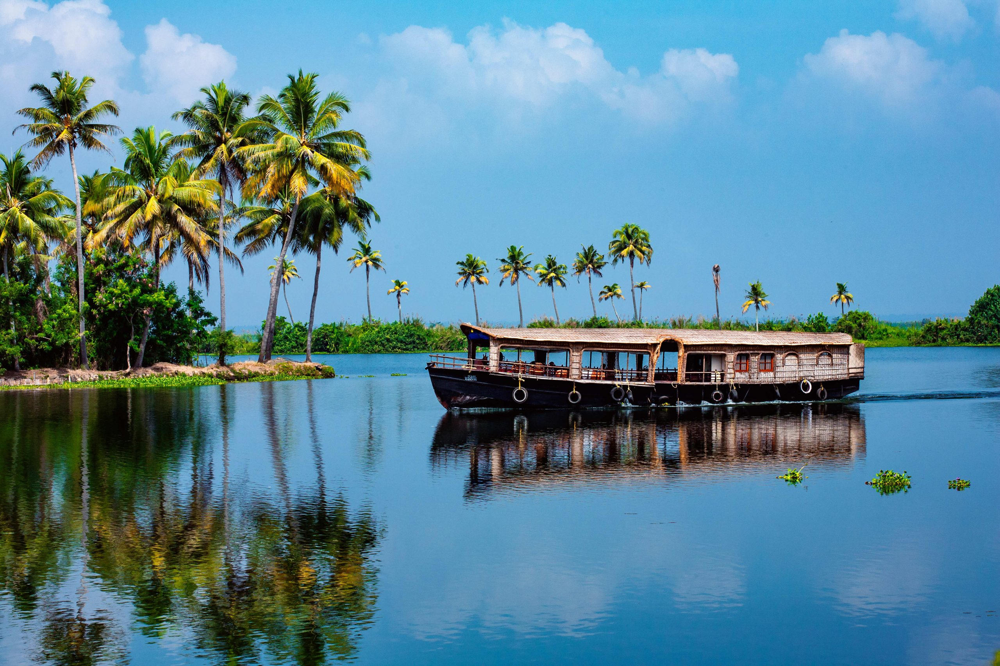

Referred to as the 'Venice of the East' by travellers fro cross the world, Alappuzha Is a district of immense natural beauty. Caressed by the Arabian Sea in the west and a vast network of lakes, lagoons and freshwater rivers criss-crossIng it, this backwater country shelters some unique animal end bird life. By virtue of its proximity to he sea, the town has always enjoyed an exclusive place the maritime history ol Kerala. Famous for its boat aces, beaches, marine products and coir Industry, the singularity of this and Is the region called Kuttanad- a land of lush paddy fields referred to as the 'Rice Bowl f Kerala' and one of the few pieces In the world where farming is done below sea level, This onetime prosperous adding and fishing centre Is today a world renowned backwater tourist destination.
Hill Stations
The scenic and serene hill stations in Kerala offer ultimate rejuvenation to a tired soul.

Backwaters
The picturesque emerald backwaters of Kerala take you on a tour of the unique lifestyle of the villages in the state.
Beaches
The sandy beaches of Kerala with azure waters are undoubtedly the perfect places for a beach holiday in South India.